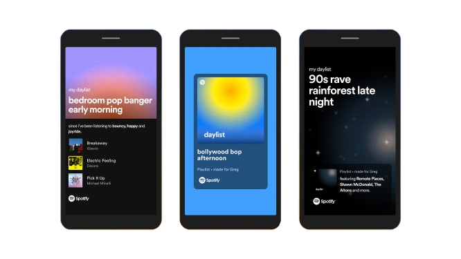
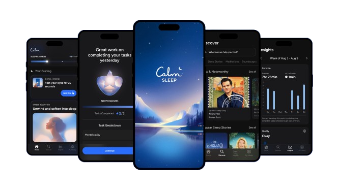

Background & Significance
College students commonly experience elevated stress and emotional fluctuation due to academic pressure, financial concerns, and major life transitions. Although counseling services exist on many campuses, access is often limited by long wait times, stigma, and lack of immediate availability. As a result, students frequently rely on informal coping strategies such as music.
The Effect of Music on the Human Stress Response by Miriam Thoma Mv et al. (2013)
- Listening to music prior to a standardized stressor predominantly affected the autonomic nervous system in terms of a faster recovery, and to a lesser degree the endocrine and psychological stress response.
- After the stressor, baseline values were reached considerably faster in the relaxing music group than in the silence group.
- Signifies that after stress, people who listened to relaxing music recovered faster than people who sat in silence.
Music listening as a means of stress reduction in daily life by Linnemann et al. (2015)
- The most profound effects were found when relaxation was stated as the reason for music listening, with subsequent decreases in subjective stress levels and lower cortisol concentrations.
- Findings highlight music's capacity to support stress recovery at a physiological level, reinforcing its potential as a low-cost and accessible emotional regulation tool.
This project is intellectually compelling at the intersection of mental health and human-computer interaction, and practically significant in proposing a low-barrier, accessible tool to support emotional regulation among college students.
Existing Solutions & Gap Analysis

- Platforms like Spotify and Apple offer mood playlists, but they are largely algorithm-shaped and optimized for entertainment rather than emotional regulation

- Calm and Headspace incorporate music into their wellness experiences and offer short guided sessions, but music plays a secondary role, primarily as background ambiance
Research Question
How do college students currently use music to regulate stress, and how might a real-time mood-based music intervention app better support their emotional regulation needs within the constraints of student life?
Our Solution
A mobile app for college students to manage stress and emotions.
- Optional post-listening feedback to personalize future recommendations
- A session history page so users can track past interventions
- Complementary wellness tool designed for fast, in-the-moment support
Research Methods
Quantitative Survey:
Participants
35 undergraduate students (ages 18–23) from UC Irvine.
Study Design
Experimental Study Design
Participants will take part in a music intervention and complete a survey
Music Intervention
10 minutes of non-stop, calming music
Survey
Self-report stress levels before and after the music intervention
Music Intervention
Semi-Structured Interviews:
Participants
Selected 12 UC Irvine undergraduate students who also participated in the quantitative survey. Participants were asked on how music relieves stress and what main features should be included in MoodTune.
Results
Survey Results

Interview Results
Across all 12 interviews, there were 4 common themes:
"If I'm stressed, I don't just put anything on. I look for something specific that will calm me down."
Theme 1: Music is intentional, not just random noise. Students described music as something they actively use to shift emotional states.
"Sometimes I know I need to calm down, but I don't have the energy to figure out what to play."
Theme 2: Decision fatigue during stress. Students reported difficulty choosing music when already overwhelmed.
"If I'm tired but still need to study, I need something different than when I'm anxious."
Theme 3: Context matters. Students' music needs change based on the situation.
"It needs to be fast. Like something I can do walking to class."
Theme 4: Desire for low effort solutions. Students emphasized time constraints with minimal amount of thinking.
Discussion
- A strong majority (77%) of students reported decreased stress after the music intervention, reinforcing the effectiveness of a music-based intervention to reduce stress
- 5.7% of students reported an increase in stress after the intervention, suggesting the intervention is beneficial with minimal negative effects
- Not all students experienced the same level of decreased stress, indicating that context likely influences effectiveness
- The fact that 62% of students would use MoodTune in their daily routine increases the likelihood of sustained engagement
- 71% of students recommend MoodTune reflects high user satisfaction of how the app meets the user's needs
Limitations & Future Directions
Limitations
- Sample size constraints: All research was conducted with UCI students, limiting the generalizability of findings to other student populations or demographics.
- Self-reported outcomes: The post-survey relied on self-reported stress levels, which are subject to bias and may not accurately reflect physiological stress responses.
- Long term effects: The study does not account for long-term effects, so it is unclear whether stress reduction is sustained over time.
Future Directions
- Incorporate physiological measures (e.g., heart rate) in addition to self-reported stress levels
- Partner with campus counseling services to conduct a controlled study comparing MoodTune outcomes against control conditions
- Have participants listen to multiple music interventions over time to analyze long-term effects
Conclusion
- Overall, the survey and interviews suggest that music-based interventions are an effective way to reduce stress
- MoodTune is a practical, user-friendly solution for integrating stress relief into daily student life